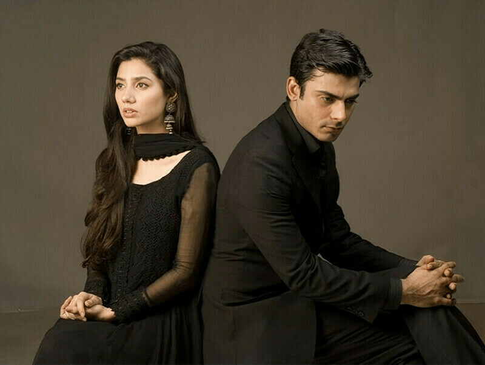

Film
Pakistani cinema developed a distinctive popular culture around Lahore's film industry, later joined by new waves of filmmaking in Karachi and other centres.

Pakistani Cinema • Television • Music • Fashion
Stories, Stars and the Spirit of a Creative Nation
From classic cinema and unforgettable television dramas to contemporary stars, singers, models, writers and directors, Pakistani showbiz reflects changing generations, languages, identities and popular culture.
پاکستانی شوبز کی دنیا
Entertainment in Pakistan spans film, television, music, fashion, theatre and increasingly digital platforms. Its history combines Urdu and regional-language traditions with changing production styles and audiences.
Pakistani cinema developed a distinctive popular culture around Lahore's film industry, later joined by new waves of filmmaking in Karachi and other centres.
Television drama became one of Pakistan's most influential storytelling forms, with PTV and later private channels reaching audiences across the country and abroad.
Classical, folk, qawwali, pop and contemporary music coexist with a fashion industry shaped by designers, models, television personalities and digital creators.
The story of Pakistani showbiz is a story of changing media, audiences and artistic generations.
After independence, the film industry developed around Lahore and Karachi. Stars, musicians and filmmakers helped establish a recognisable Pakistani popular cinema.
Film stars became major cultural icons, while television and stage performance expanded the country's entertainment landscape.
PTV drama, serials, music programmes and family entertainment became important parts of everyday life, with strong literary and theatrical influences.
Private television networks expanded drama production and created a larger commercial ecosystem for actors, writers, directors and presenters.
Streaming, social media and online video have widened the reach of Pakistani dramas, music and performers.
Generations of performers have shaped Pakistani cinema and television, from classic film icons to today's internationally recognised television stars.

These titles are widely remembered as important or popular parts of Pakistani television culture.
A landmark drama remembered for its literary and social storytelling.
A much-loved classic of Pakistani television drama.
A widely remembered drama centred on friendship and military life.
A major modern television drama starring Fawad Khan and Mahira Khan.
A popular drama exploring class, education, relationships and social expectations.
A prominent drama known for its character-driven romantic story.
A widely discussed drama combining romance, family and social themes.
A friendship and coming-of-age story with national and military themes.
A major modern television drama that became a cultural talking point.
A character-led drama built around identity, class and social change.
A contemporary drama that gained a large audience in Pakistan and abroad.
A modern serial noted for its darker dramatic style.
A contemporary romantic family drama.
A popular Ramadan romantic comedy-drama.
A popular family romantic comedy-drama.
Pakistani cinema has a long history in popular entertainment, with Lahore's film culture playing a particularly important role and newer filmmakers contributing to contemporary Pakistani cinema.
The classic era produced major stars, musicians, playback singers and filmmakers whose work remains part of Pakistan's popular cultural memory.
The term is commonly associated with Lahore's film industry, which became a central hub of Pakistani popular cinema.
Contemporary Pakistani cinema includes independent and mainstream productions, with performers and filmmakers working across Pakistan and internationally.
Pakistan's fashion scene has grown alongside television, advertising, designer culture and digital media.
Runway shows, fashion weeks, designer labels, advertising and television have helped turn modelling into a visible part of Pakistani popular culture.
Social media and digital publishing have broadened how models, actors and fashion personalities reach audiences and build public profiles.
Pakistan's musical landscape spans classical traditions, qawwali, ghazal, pop, rock and contemporary music.
The people behind the camera and page have shaped the distinctive voice of Pakistani television and film.
Pakistan's broadcast landscape has expanded from a single national television tradition to a competitive mix of private channels and digital services.
Pakistan Television played a foundational role in establishing the country's television drama tradition.
A major private network associated with Pakistani dramas and entertainment programming.
A major entertainment broadcaster with a large drama and television audience.
A major Pakistani entertainment network with dramas and popular television programming.
A newer entertainment network contributing to contemporary Pakistani television.
Streaming and online video have expanded the reach of Pakistani dramas and performers.
Pakistani performers and productions are recognised through major national media awards and have built audiences in South Asia and among the global Pakistani diaspora.
A major Pakistani awards institution covering film, television, music and fashion.
Recognition associated with Pakistani television and entertainment.
Satellite television, social media and digital video have helped Pakistani dramas and performers reach audiences beyond Pakistan.
پاکستانی شو بز کی دنیا میں فلم، ٹیلی ویژن، ڈرامہ، موسیقی، فیشن اور ڈیجیٹل میڈیا سب شامل ہیں۔ پاکستان ٹیلی ویژن کے ابتدائی دور سے لے کر نجی چینلز اور آن لائن پلیٹ فارمز تک، پاکستانی فنکاروں اور تخلیق کاروں نے ایک مضبوط تفریحی روایت قائم کی ہے۔
پاکستانی ڈراموں نے خاندانی زندگی، معاشرتی مسائل، محبت، تعلیم، طبقاتی فرق اور قومی موضوعات کو مختلف انداز میں پیش کیا ہے۔ فلم اور موسیقی کے شعبوں نے بھی پاکستان کی ثقافتی شناخت کو دنیا تک پہنچانے میں اہم کردار ادا کیا ہے۔
Use these categories to explore the main themes of the archive.